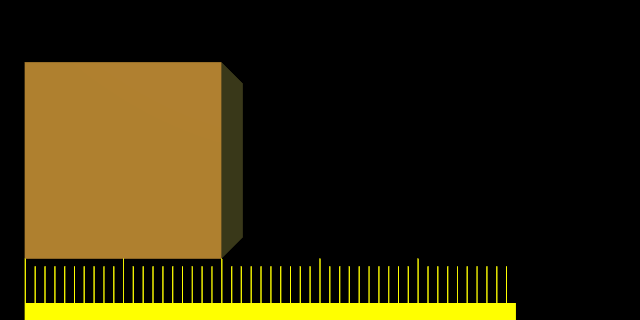

Motion Blur¶
Blender’s animations are by default rendered as a sequence of perfectly still images. While great for stop-motion and time-lapses, this is unrealistic, since fast-moving objects do appear to be blurred in the direction of motion, both in a movie frame and in a photograph from a real-world camera.
Blender has two ways to achieve motion blur:
Sampled Motion Blur¶
Blender can be made to render the current frame and some more ‘virtual’ frames in between it and the next frame, then merge them all together to obtain an image where moving objects are ‘blurred’.
This method is slow, but produces good results. It can be activated in the Sampled Motion Blur panel of the render settings. This kind of motion blur is done during the render.
- Motion Samples
- Set the number of samples to take for each frame. The higher the samples, the smoother the blur effect, but the longer the render, as each virtual intermediate frame has to be rendered.
- Shutter
- Time (in frames) the shutter is open. If you are rendering at 24 fps, and the Shutter is set to 0.5, the time in between frames is 41.67 ms, so the shutter is open for half that, 20.83 ms.
注解
Samples are taken only from the next frame, not the previous one. Therefore the blurred object will appear to be slightly ahead of how it would look without motion blur.
Vector Blur¶
Vector Blur is faster but sometimes has unwanted side-effects which are sometimes difficult to avoid.
Vector blur is a process done in compositing (post-render time), by rendering the scene without any blur, plus a pass that has movement information for each pixel. This information is a vector map which describes a 2D or 3D direction and magnitude. The compositor uses that data to blur each pixel in the given direction.
Examples¶
To better grasp the concept, let us assume that we have a cube 2 units wide, uniformly moving 1 unit to the right at each frame. The scale beneath the cube helps in appreciating the movement of 1 Blender unit.

Frame 1 of the moving cube without Motion Blur. |
{kind=link}
{kind=link}
{kind=link}
Frame 1 when Sampled Motion Blur is enabled and eight ‘intermediate’ frames are computed. Shutter is set to 0.5 , thus the image eight samples are rendered between frame 1 and halfway to frame 2.

The effect of an increased shutter value. |
{kind=link}
Values greater than 1 are physically impossible in a real-world camera, but can be used to exaggerate the effect. Better results than those shown can be obtained by using higher samples than 8, but, of course, since as many separate renders as samples are needed, a Motion Blur render takes that many times more time than a non-Motion Blur one.
Hints¶
Sampled Motion Blur can be used as an additional form of Anti-Aliasing, since aliasing artifacts are computed differently for each sample and averaged together at the end.